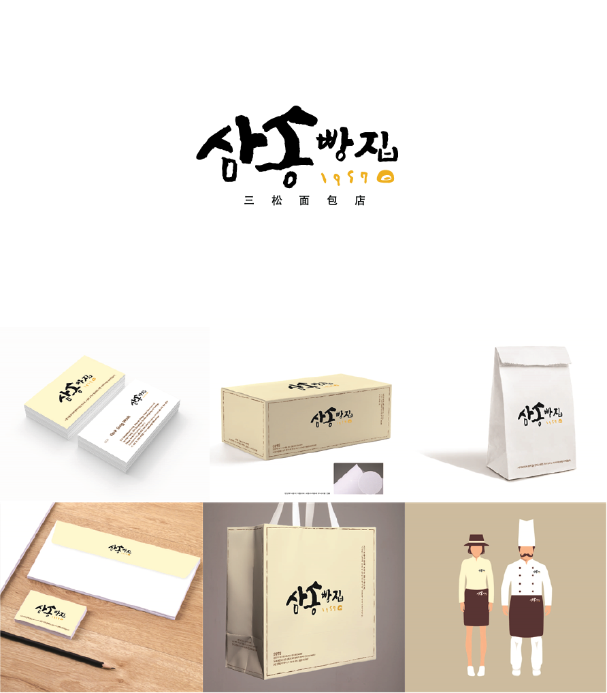

ROLE
Design Plainning
전국 10대 빵집으로 60년 전통을 가진 대구의 대표 빵집 브랜드.
브랜드 정체성이 부족하고 경쟁사와 차별화 되지 않은 디자인
오랜 역사로써의 깊이를 낼 수 있는 고풍스러운 느낌과 독자적인 기술을 나타낼 수 있는 유니크한 느낌을 심플하고 모던하게 표현해 하이엔드 브랜드로써의 디자인 개발
고급화를 위한 삼송빵집 하이엔드 브랜드 개발
60년 역사
마약빵
三松
60년 역사를 지닌 전통과 브랜드 가치를 고객들에게 전달 할 수 있도록, 방금 구워낸 폭신한 빵에서 모티브
메인 메뉴인 마약빵이라 불리우는 옥수수빵의 컬러를 고려
세그루의 소나무라는 뜻을 가진 삼송을 소나무 형태와 잘 어울리는 캘리를 적용
